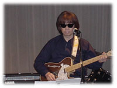

|
Ｙシャツをズボンの中に入れていたら、「早川さん、それは、出さな……きゃ」と言われてしまった。横浜そごうコム・デ・ギャルソンの店長にだ。靴も言われてしまった。「いまどき、そういう靴はいている人いませんよ。まわり見て下さい」そうかな、僕は気に入ってるんだけどな。たしかに、もう随分前に買ったものだけど、別に流行りすたりがあるようなものではなく、スリッポンとかいうごくごく普通な靴だ。「そのジャケットとパンツなんかには、スニーカーの方が似合いますよ」と言う。
めったに行かないのだけど、感じがいい人なので、不思議と僕は不快にならない。うちのもそばで笑っている。わざとよれよれした生地のジャケットなど、「これどうですか。こういうの着こなして欲しいんだけどな」とすすめられた時も、「いやー、僕が着ると、ホームレスになっちゃうからな」と試着すると、「うん、そうですね」と言う。はっきりしている。
その前は、カール・ヘルムに凝っていた。急に色気づいてしまったせいか、一時期、デザインが気に入って、よく通った。今思うと、何でこんなの買っちゃったのかなと思うようなものもあるけれど、そのうち、歳のせいだか何だか似合わなくなってしまったが、そのころの僕は、ピンクハウスの服が似合う女の子とひそかにデイトをしたいと思っていたものだった。
その前は、何でも良くて、何でも良くはないけれど、服屋に入ること自体が好きでなく、買ってきてもらうか、昔のものをずうっと着たりしていた。実家は洋服問屋だったが、どうも服屋は苦手で、なぜなら、本屋と違って、必ず店員が寄って来て、なんだかんだと話かけてきたり、気のせいかも知れないが、じろりと品定めされるようなところがあるからだ。
今でもそうだが、無地でシンプルなものを探そうとしても、なかなか見つからない。たとえば、海水パンツ。何かしら別な色が混じっていたり、必ずロゴマークが入っている。今でこそ、無印良品とか、ユニクロとかで、無地が多くなったけれど、昔は、Ｔシャツでもカーテンでも食器でも電気ポットでも何でも建築でも、くねくねとした余計なデザインや意味のない柄が必ず入っている。柄が入っている方が、手間がかかるわけだから高価なはずなのに、なぜか、柄入りは安くて無地は高い。あれは不思議だ。何故なのだろう。無地に耐えるデザインなり、質が問われるからだろう。無地やシンプルや素朴というものは、ごまかしが効かない。
いつ頃からだろうか、ジャンパーはジャンパーとは言わず、ブルゾンと言うようになり、ズボンはパンツ、シャツはシャツともいうがブラウスとも言う。
ギターは、アクセントが変わり、かつて自分のバンド名だったジャックスも、いつのまにか、平坦なアクセントに変わってしまった。それは、奇妙なものだ。冬眠中に、呼び名やアクセントが、何の了解もなしに変わってしまうのは、随分と取り残された気持ちになる。柔軟でないから、恥ずかしいから、僕はいまだに、ズボンをパンツとは言えない。アクセントもかつてのままだ。
最近またギターを少しさわるようになったのだが、これがまた、慣れない。三十年前、たしかに、エレキギターを弾いていたのだが、まあ、昔から下手というか、ものになっていなかったため、弦を張り替えるだけで、どっと疲れてしまう。指は痛い、リズムはきざめない。
だいたい、昔は、チューニングメーターというものがなかった。ギターとアンプを結ぶシールドも、コードと言っていたような気がするし、肩ひものことをストラップと言っていただろうか、それはただ、僕が英語オンチなだけか、とにかく、ステージ上のＰＡも、録音技術もすっかり変わってしまった。もちろん、便利になり良くなったのだが、うーん、特別歌いやすくなったかというとそうでもない。僕の耳は、なんら昔と変わらないからだ。

二十数年間、音楽から遠ざかり、再び歌い始めた時、最初よく訊ねられたことは、どのように音楽状況が変わったかであった。ところが、僕の耳には、僕の目には、何も変わっていない。たしかに、歌謡曲とか演歌みたいなものが、随分下火になり、若い人向けの、なんていうジャンルなのかよく知らないけれど、さまざまなものが流行り、それも、歌い手自身が歌を作って歌うというのが、もう当たり前になったのはいいことだが、だからといって、音楽が変わったとか、良くなったとかとは、どうも思えないのである。
結局は、同じだ。流行するものは、いつの時代も、ほんの一部を抜かして、ここがむずかしいところだが、決まって、ほとんどつまらないものである。でも、これは、常に老人が言うセリフだ。
かといって、昔を懐かしみ、かつての流行り歌を求める気持ちも僕にはない。やはり、昔を懐かしむというのは、あまり好きじゃない。時々はいいけれど、それがメインというのは、ステキじゃない。やはり、今、作られているもの、今、生まれたものを見たり聴いたりして感動できる状態の方が好ましい。
過去を振り返り、あの頃は良かったなーとか、あの時代は良かったなーと、過去に輝いていたものを祭り上げるというか、抜け出せないというのは寂しい。
別に僕の過去が輝いていたわけではないが、時々、過去の歌を評価されると、もちろん、嫌ではないけれど、必ず今の自分に行き当たる。だから、もしも、昔の歌だけを評価されると、頑張らなくちゃいけないなと思う。過去のことなど、僕にとっては、どうでもいいことなのだ。今の僕がいいか悪いかだけである。
だからといって、さも僕が前向きな男かというと、実はそうではなく、まったく逆で、常に僕は過去を振り返り、後悔し、こもっている。だからこそ、人が過去をほじくり出していると、嫌悪を感じるのだろう。
今、何を考え、今、何を思い、今、どんな気持ちなのかを歌に表現できたらと思う。それでこそ、歌手というものだ。もちろん、歌う内容は、何でもかまわないが、今の自分を表現できなければ、じーんとは来ない。
それは、歌に限らず、何だってそうだ。日常においてもそうだ。いつだってそうだ。今、輝いているか、今、幸せか、今、楽しいか、今、誰に何を伝えたいのか、それだけだ。どんなに歳をとっても、老いぼれても、死ぬ間際においてもそうだ。過去のことなどどうでもいい。今、楽しいか、今、笑えるか、今、何に感動できるか、それだけである。
僕は自分の昔のアルバムが聴けない。声が気持ち悪い。別に、わざとあんな声を出していたつもりはなかったが、今聴くと変である。実に下手だ。それは今も変わらないが、今の声の方が自分では自然だと思っている。しかし、この間、久しぶりに、新しいアルバムを聴いたら、これもまた、まあ、曲によってだが、声が気持ち悪く感じてきてしまった。
出来上がった時は、酔いしれて、うぬぼれて、曲順を決めたりするのに、何度も聴くのに、完成するとパタッと聴かなくなる。自分の歌は、欠点ばかり見えてくる。
ところが、意外なところで、たとえば何かの映像のバックに突然流れているのを聴いたりすると、もちろん、僕の場合、そんなことは滅多にないが、なかなかいいなと思う。自分でいうのも何だが、違う場所から聴こえてくると、悪くないのだ。
最近、ピアノの弾き語りだけではなく、いろいろな人と共演して、やはり、音楽は楽しいのがいいなと思った。今ごろ、こんなことに気づくなんて、まったく遅すぎるけれど、人と一緒にやってつくづく思う。いい音をもらうと、ホント、嬉しくなり、自然と身体が動き、笑えて来るのだ。悲しい歌も、明るく歌える。明るい歌も、悲しく歌える。内にこもるのではなく、外に向けて歌える。前向きになれる。悲しくても元気になれる。そういうふうに歌いたい。
いい音は生きている。呼吸をしている。いい音を出す人は、音を出していない時も音が聴こえてくる。いい音は、ほんの少しメロディーを爪弾くだけで、リズムが聴こえてくる。リズム楽器なのに、メロディが聞こえてくる。そのくらい、上手い人というのは、力を持っている。歌心のある人は、そういうものだ。楽器が別な音に聴こえてくる。心が楽器だからだ。
シンプルな服が着ている人の着こなしで、いくらでもステキに見えるのと同じように、一見、シンプルな音から、演奏する人の力で、音楽はどこまでも広がって行く。
そういえば、『プレタポルテ』という映画だったろうか、最後のファッション・ショーのシーンは、全裸であった。
|